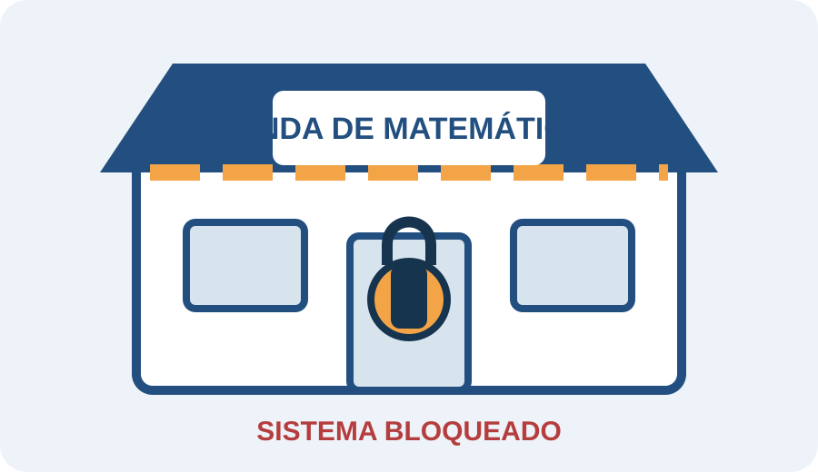

Resolver
Cada estación propone una situación matemática o didáctica. Registren las decisiones del grupo.
Misión híbrida · aula + web
Los pedidos se acumularon, las respuestas quedaron sin justificar y el sistema central fue bloqueado. Recuperen cuatro principios de la actividad matemática para reabrir la Tienda.

Cada estación propone una situación matemática o didáctica. Registren las decisiones del grupo.
La validación digital entrega el código de un candado físico. Dentro de cada caja encontrarán una palabra.
La palabra física habilita la estación siguiente. La web y los candados se necesitan mutuamente.
Organiza la lectura de la consigna y cuida los tiempos.
Anota acuerdos, argumentos, dudas y cambios de estrategia.
Administra tarjetas, cajas y códigos sin adelantarse a las estaciones.
Comunica la respuesta del grupo durante la puesta en común.